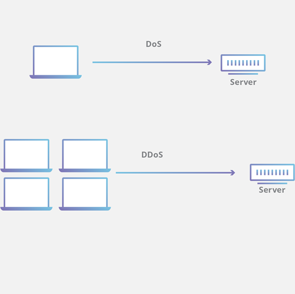
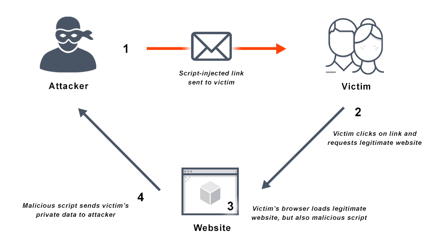
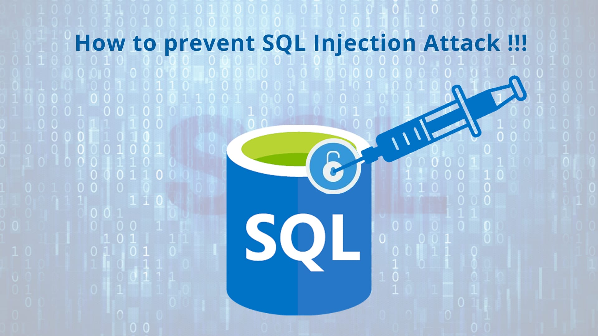

Task 3
| Name | Web Attacks |
|---|---|
|
Distributed/Denial of Service Attacks (DoS/DDoS)
 |
A Denial of Service service attack is a type of attack that targets a service or network using large amounts of malicious requests in order to overwhelm server resources, disrupting regular traffic. This can prevent users from accessing functionality such as general web traffic, email services and more.
A Distributed Denial of Service attack utilises a large number of internet connected devices to increase the amount of requests on a target network. These requests are often sent from systems infected with malware and are referred to as 'botnets' - bot network Source: https//www.cloudflare.com/learning/ddos/glossary/denial-of-service/ |
|
Man in the Middle attacks
|
Man in the Middle (MitM) attacks are a type of attack where communication between two devices is intercepted, and potentially altered. Attacks can be passive, where the attacker simply records communication between two networks, such as to steal login information between a user and server, or can involve the attacker altering information, allowing attackers to alter information or setup new connections, such as sending users to incorrect websites.
To help protect against these attacks, encryption protocols such as TLS are recommended. Source: https://www.csoonline.com/article/566905/man-in-the-middle-attack-definition-and-examples.html |
|
Cross Site Scripting attacks
 |
Cross Site Scripting (XSS) are a type of attack where malicious scripts are injected into a trusted website. User browsers trust the source of a page/scripts and cannot inherently identify that the scripts come from a malicious source. Due to this trust, the injected script also has access to cookies and session tokens held by the browser.
Source: https://owasp.org/www-community/attacks/xss/ |
|
SQL Injection Attacks
 |
SQL Injection attacks are attempts to interfere with queries web applications make to their databases. The intended result is to obtain information that otherwise would not be shown to a user, such as login credentials, sensitive information, or application data. Attacks can also attempt to modify or delete information in the database.
A simple example of this is inputting SQL queries into form text fields that the web application uses as input to form SQL queries. Without checking or sanitizing the user data, SQL commands can be directly submitted by attackers. Source: https://portswigger.net/web-security/sql-injection |
Brute Force Attacks

|
Brute Force attacks are when an attacker attempts to gain access to a system by repeatedly trying login credentials against a web application. Typically automated, these attacks can be as simple as trying to login with a known legitimate username or email for a service, and trying every possible password combination until the login attempt succeeds.
Multifactor Authentication and limiting failed attempts are common ways to prevent these types of attacks from succeeding. Source: https://www.fortinet.com/resources/cyberglossary/brute-force-attack |
|
Dictionary Attacks
|
Related to Brute Force attacks, Dictionary attacks use commonly known passwords, words and character combinations. Whereas in a brute force attack, scripts use all possible combinations in sequence to attempt to login to a web application, dictionary attacks attempt to cut down on the amount of login attempts, and therefore time taken, to penetrate a system.
To help avoid being vulnerable to dictionary attacks, web applications often enforce rules such as using capital letters, symbols, and numbers in user passwords, and it is encouraged not to use terms such as 'password' or sequences like 'abcd123'. Source: https://www.kaspersky.com/resource-center/definitions/what-is-a-dictionary-attack |
|
Phishing Attacks
|
Phishing is when attackers contact users, commonly through email or sms, pretending to be from a trusted source. Common examples are recieving emails that are formatted identically to banking emails. These emails often direct users to fraudelent websites posing as the sender and attempt to get users to download malware or steal login information.
Phishing attacks can be broad, by sending emails to large numbers of users, or targeted, known as Spear-Phishing, using known information about targets to customise phishing attacks to appear more authentic. Source: https://www.cyber.gov.au/learn-basics/explore-basics/watch-out-threats/phishing-emails-and-texts |
|
DNS Poisoning
|
In DNS Poisoning attacks, attackers attempt to insert fake information on DNS servers. When users try to navigate to a website, the address is resolved to an IP address from a trusted source. If attackers have managed to insert fake information into a DNS server, large numbers of users can be directed to fraudulent websites, leading to credential theft, malware and more.
Source: https://www.fortinet.com/resources/cyberglossary/dns-poisoning |
|
Ransomware
|
Ransomware is a category of malware that locks users out of systems and files. This is commonly done by encryipting files on a user's system so that they cannot be accessed. Attackers then demand that users pay to unencrypt the files and regain access.
Source: https://www.cyber.gov.au/threats/types-threats/ransomware |
Session Hijacking

|
When users login to a web application, a session cookie is generated is created to keep the user's browser authenticated, keeping the user logged in until the user manually logs out, the cookie times out, or other action is taken to terminate the session. Session hijacking is when an attacker is able to gain access to the session cookie to take control of the users session.
Depending on the type of web application, attacks can steal user information, money, or more. Source: https://us.norton.com/blog/id-theft/session-hijacking |